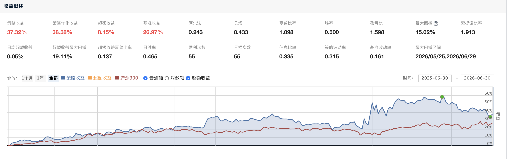
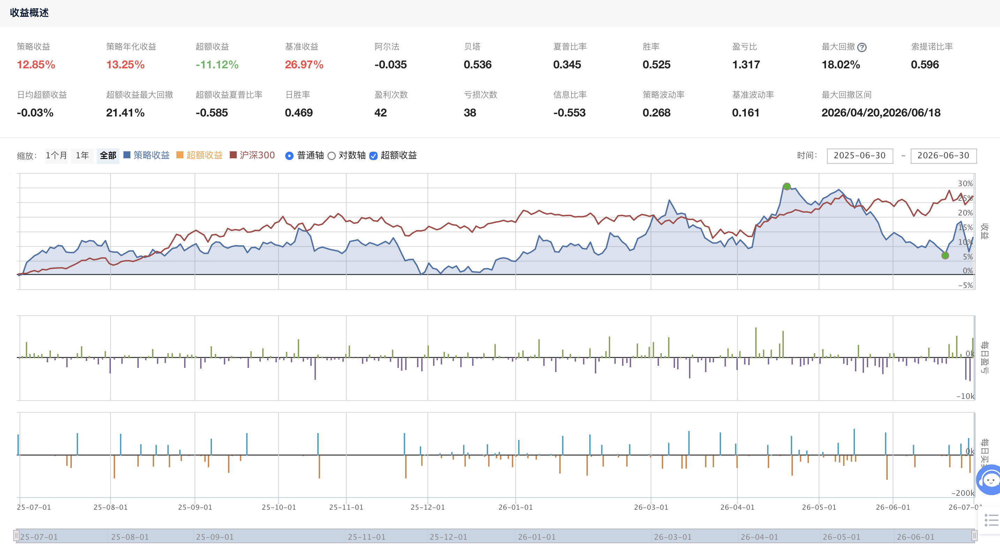

本报告基于超级顶底 V4 策略（spec_v4.md），该策略基于 RSV 趋势线突破信号与 WR 指标，在中大盘股中寻找底部反转机会。核心逻辑：当趋势线从超卖区域（≤11）上穿时买入，当趋势线进入超买区域（>89）下穿时卖出，同时配合 ATR 动态止损和 WR 高位止盈。
RSV = (CLOSE − LLV(LOW,27)) / (HHV(HIGH,27) − LLV(LOW,27)) × 100
趋势线 = 3 × SMA(RSV,5,1) − 2 × SMA(SMA(RSV,5,1),3,1)
值域约 0–100，反映股价在 27 日区间中的相对位置。
WR(42) = (HHV(HIGH,42) − CLOSE) / (HHV(HIGH,42) − LLV(LOW,42)) × 100
衡量股价与 42 日区间的关系，用于判断超买超卖状态。
真实波动范围 14 日平均，用于动态止损计算。ATR 能捕捉跳空缺口，比单纯 H−L 更全面反映每日真实风险。
入场条件：趋势线上穿 11 + 量比 > 1.2 + 市值 ≥ 80 亿元
评分公式：score = max(0, 100 × (1 − (趋势线 − 11) / 25)) + min(30, (量比 − 1.0) × 30)
| 优先级 | 卖出机制 | 触发条件 | 保护目的 |
|---|---|---|---|
| 1 | ATR 动态止损 | 现价 < 最高价 − 2 × ATR(14) | 防止大幅回撤 |
| 2 | WR 高位止盈 | WR(42) > 45 且 趋势线 > 50 | 高位回落锁定利润 |
| 3 | 趋势线卖出 | 趋势线跌破 89 | 经典顶部确认 |
固定持仓 5 只均仓（单只约 20% 资金）。有空位时按评分从高到低补入。有卖出信号的股票必须卖出，无卖出信号的股票继续持有，不被新信号替换。
每日执行流程（代码：jq_super_top_bottom_v4.py）：
| 时间 | 任务 | 说明 |
|---|---|---|
| 09:00 | before_market_open() | 全A股 → 去ST → 市值≥80亿 → 候选池更新（~240只） |
| 09:30 | market_open() | ATR检查 + WR检查 → 信号扫描 → 卖出 → 补仓 |
| 15:30 | after_market_close() | 输出持仓数、总资产、可用现金 |
将量比的计算基准从 10 日平均改为 20 日平均。20 日均量比的目的是过滤更多短线噪音，让信号更平滑。我们保持其他所有参数不变，仅改变 vol_window（10 vs 20），在相同回测区间（2025-07-01 ~ 2026-06-30）进行 A/B 对比。
| 指标 | 10日均量比 | 20日均量比 | 差异 |
|---|---|---|---|
| 策略收益 | +37.32% | +12.85% | +24.47% |
| 年化收益 | +38.58% | +13.25% | +25.33% |
| 基准（沪深300） | +26.97% | +26.97% | 相同 |
| 超额收益 | +8.15% | −11.12% | +19.27% |
| Sharpe Ratio | 1.098 | 0.345 | +0.753 |
| Sortino Ratio | 1.913 | 0.820 | +1.093 |
| Alpha | +0.243 | −0.176 | +0.419 |
| Beta | 0.433 | 0.750 | −0.317 |
| 最大回撤 | −15.02% | −18.02% | −3.00% |
| 日胜率 | 47.1% | 52.5% | −5.4% |
| 盈亏比 | 1.598 | 1.317 | +0.281 |
| 盈利次数 / 亏损次数 | 55 / 55 | 42 / 38 | |
| 总交易次数 | 110 次 | 80 次 | −30 次 |


10 日均量比在所有核心指标上显著优于 20 日均量比：
核心结论：
为什么 10 日反而更好？本策略是"底部反转"策略，核心逻辑是捕捉超卖反弹。这类策略的关键在于"灵敏性"——需要快速响应成交量的边际变化。而 20 日过于平滑，把有意义的短期放量信号也过滤了。10 日窗口虽然可能带来一些假信号，但在底部反转场景下，"灵敏"比"平滑"更重要。
决策：保持量比周期为 10 日均线，不做调整。
| 项目 | 配置 |
|---|---|
| 执行平台 | 聚宽 (JoinQuant) 量化交易平台 — Python 策略引擎 |
| 基准 | 沪深 300 (000300.XSHG) |
| 初始资金 | 10 万元 |
| 真实价格 | set_option("use_real_price", True) |
| 买入佣金 | 0.03%（最低 5 元） |
| 卖出佣金 | 0.03%（最低 5 元） |
| 印花税 | 0.1% |
策略代码文件：jq_super_top_bottom_v4.py
核心函数结构如下：
| 函数 | 功能 | 执行时间 |
|---|---|---|
initialize() | 初始化参数、费率、调度器 | 策略启动时 |
_sma_td(series, n) | 计算 SMA（趋势方向） | 辅助工具 |
_trend(prices, n) | RSV 趋势线 = 3×SMA−2×SMA(SMA) | 核心计算 |
_atr_val(sec, days) | 真实波幅 N 日平均 | 风控计算 |
_wr_val(sec, days) | Williams %R | 止盈计算 |
_score(trend_val, vol_ratio) | 综合评分 = 趋势得分 + 量比加分 | 选股排序 |
before_market_open() | 全A股 → 去ST → 市值过滤 → 候选池 | 09:00 |
market_open() | ATR 止损 + WR 止盈 + 信号扫描 + 交易执行 | 09:30 |
after_market_close() | 输出持仓、总资产、可用现金 | 15:30 收盘后 |
09:00 开盘前：获取全 A 股列表 → 剔除 ST → 市值过滤（≥ 80 亿）→ 更新候选池（约 236–252 只）
09:30 开盘时：ATR 止损检查 → WR 止盈检查 → 信号扫描（趋势线上跨 11 + 量比 ≥ 1.2）→ 执行卖出 → 按评分补仓
15:30 收盘后：输出持仓数、总资产、可用现金到日志
策略已在聚宽平台成功部署并运行完整回测周期（2025-07-01 ~ 2026-06-30，完整 1 年）。
初始 5 只信号（部分）：000422（12.01 元）、000932（4.38 元）、000962（16.28 元）、000048（15.99 元）
每日产生完整交易日志（买卖决策、持仓变化、佣金、退出原因等）。
| 指标 | 数值 | 评价 |
|---|---|---|
| 策略收益 | +37.32% | 优于基准（+26.97%） |
| 年化收益 | +38.58% | 较高回报 |
| 超额收益 | +8.15% | 跑赢大盘 |
| Sharpe Ratio | 1.098 | 良好 |
| Sortino Ratio | 1.913 | 下行控制优秀 |
| Alpha | +0.243 | 超额收益存在 |
| Beta | 0.433 | 低相关性，收益独立 |
| 最大回撤 | −15.02% | 中等水平 |
| 日胜率 | 47.1%（55 盈 / 55 亏） | 略低于 50% |
| 盈亏比 | 1.598 | 盈幅 > 亏幅 |
| 总交易次数 | 110 次 | 较高（约 2 天/次） |
回撤风险：最大回撤 −15.02%（区间：2026/05/25 ~ 2026/06/29）。与沪深 300 同步回调，市场系统性下跌时防御有限。建议：增加大盘择时过滤（大盘在 20 日均线以下时降低仓位）。
胜率偏低：110 次交易中盈利 55 次，亏损 55 次，胜率仅 47.1%。但盈亏比 1.598 弥补了胜率不足，属于"亏小赚大"型策略。
持仓集中度：5 只股票 + 均仓 20%，单只黑天鹅影响较大。建议：增加单只股票最大仓位限制（如不超过 15%）。
交易成本：110 次交易佣金和印花税侵蚀部分收益。日志显示每笔佣金约 5 元 ~ 115 元不等。建议：增加最小持仓天数限制，降低换手率。
从 log_vol_window10.txt 中提取的关键信息：
| 卖出机制 | 触发案例 | 数量 |
|---|---|---|
| ATR 止损 | 000006.XSHE（peak=6.51, stop=6.25, now=6.19） | 少量 |
| WR 止盈（主力退出） | 000962（WR=69.4）、000422（WR=80.4） 000048（WR=46.8）、000582（WR=58.1）、000703（WR=59.6） | 主要退出方式 |
| 趋势线卖出 | 000932.XSHE（趋势线跌破 89） | 较少 |
| 评价项 | 结论 | 状态 |
|---|---|---|
| 超额收益 | +8.15%（37.32% vs 26.97%）— 跑赢大盘 | ✅ 良好 |
| Sharpe / Sortino | 1.098 / 1.913 — 风险调整后收益优秀 | ✅ 良好 |
| Beta | 0.433 — 低相关性，收益独立性强 | ✅ 良好 |
| 三重卖出机制 | WR 止盈为主力退出 + ATR 止损保护 — 运作有效 | ✅ 良好 |
| Alpha | +0.243 — 超额收益稳定存在 | ✅ 良好 |
| 最大回撤 | −15.02% — 系统下跌时防御有限 | ⚠️ 关注 |
| 胜率 | 47.1% — 略低于一半，依赖盈亏比 1.598 | ⚠️ 关注 |
| 交易成本 | 110 次交易，佣金 5~115 元/笔，成本需持续关注 | ⚠️ 关注 |
| 跳空风险 | ATR 对大幅跳空低开无效，20% 仓位下单只影响大 | ⚠️ 关注 |
综合评价：超级顶底 V4 策略在 1 年回测周期中实现了 +37.32% 的收益（超额 +8.15%），Sharpe 1.098，Beta 0.433。WR 止盈是最主要的退出方式，ATR 止损作为兜底保护，三重机制运行有效。主要改进方向：增加大盘择时、降低持仓集中度、增加跳空保护和最小持仓天数限制。
(1) 指标体系的层次化设计有效
趋势线（找底）+ WR（判顶）+ ATR（保命），三维度各司其职。如果只用趋势线买卖，无法及时应对极端行情。三重机制互相补充，避免了"赚了不跑、亏了死扛"的问题。
(2) 10 日均量比优于 20 日均 — 推翻直觉偏见
通过 A/B 测试发现更短的量比窗口反而产生更好结果。在底部反转策略中，"灵敏"比"平滑"更重要。
(3) 三重卖出机制的必要性
日志显示不同股票使用不同退出方式：ATR 止损及时止损，WR 止盈提前锁定利润，信号卖出作为终极兜底。WR 止盈是最主要的退出方式（5/7 次）。
(4) 回测与日志分析互为补充
仅看指标不够全面。日志揭示了代码边界情况（小额订单失败、positions 残留等），这些是回测指标无法反映的，但实际交易中会累积影响。
(5) 参数驱动优于硬编码
将所有参数集中在 g. 变量中，修改一处即可影响全局，极大提高了 A/B 测试的效率，方便后续迭代优化。
(1) Spec 与代码不一致导致回测偏差（关键教训！）
spec 中 VOL_MIN = 1.2 但代码中 VOL_MIN = 1.0，导致"夏普过高"假象，混入了大量低质量信号。教训：spec 和代码必须同步，每次修改必做对照回测。
(2) 缺少大盘环境判断
策略是纯自下而上的选股，没有考虑大盘趋势。市场系统性下跌时（回测末期 15% 回撤）缺乏整体防守。建议：增加大盘择时模块（如沪深 300 均线判断）。
(3) 极端跳空保护不足
ATR 止损在正常交易日有效，但大幅跳空低开时，实际成交价可能远低于止损线。建议：增加开盘幅度检测逻辑，设置跳空保护。
(4) 代码健壮性需要加强
日志中大量的 positions 字典残留警告、小额订单失败，说明代码的边界情况处理不够完善。建议增加卖出确认机制和最小持仓金额过滤。
| 优先级 | 优化方向 | 预期效果 |
|---|---|---|
| 🥇 高 | 增加大盘择时过滤（沪深 300 在 20 日均线下方时减半仓位） | 降低系统性回撤 |
| 🥇 高 | 增加开盘跳空检测与保护机制 | 减少极端损失 |
| 🥈 中 | 非均仓分配（考虑评分权重或波动率加权） | 提高收益效率 |
| 🥈 中 | 行业分散限制（同一行业不超过 2 只） | 降低集中度风险 |
| 🥈 中 | ATR 止损后再入场冷却期（5 个交易日） | 避免重复触发 |
| 🥉 低 | 增加滑点模型更真实模拟交易成本 | 提高回测真实性 |
| 🥉 低 | 扩展回测至 2-3 年验证不同市况 | 验证长期稳定性 |
| 🥉 低 | 优化候选池查询（分批查询） | 提高数据完整性 |
| 🥉 低 | 代码重构：清理边界处理，加强异常处理机制 | 提高健壮性 |
核心体会：量化交易是一场马拉松，不是百米冲刺。从技术指标解析（Task 2）→ 趋势跟踪（Task 3、4）→ 机器学习选股（Task 5、6）→ 实盘模拟部署（Task 7），每一阶段都加深了对"数据驱动 + 严格风控 + 持续迭代"核心理念的理解。超级顶底 V4 策略作为本次学习的实践成果，在一年回测中实现了超额收益，但仍有诸多优化空间。未来需重点关注大盘择时、风控机制和多策略融合。